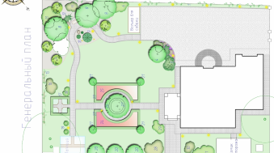
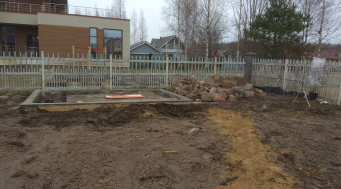
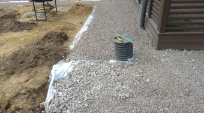
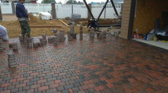
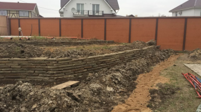
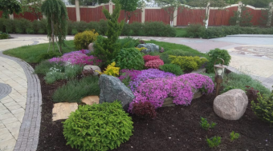
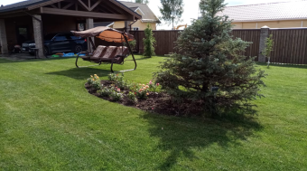

Санкт-Петербург и ЛО
Санкт-Петербург и ЛО
Благоустройство
и озеленение участков
Опыт работы более 10 лет
Гарантия на растения
Лучшие питомники
Опыт работы более 10 лет
Гарантия на растения
Лучшие питомники
Relief Image - компания по уходу за садом и ландшафтом. Более 10 лет мы занимаемся благоустройством загородных участков, также имеем порядка 60 готовых работ в Ленинградской области и Санкт-Петербурге. К нам обращаются и доверяют уже более 20 постоянных клиентов за помощью по благоустройству и уходу участков. Наша компания отличается КАЧЕСТВОМ выполненных работ, ГАРАНТИЕЙ на растения, ЛУЧШИМИ питомниками для вашего участка и разработкой проекта ПОД КЛЮЧ. Обратившись к нашим специалистам, вы всегда будете чувствовать, как мы с большим вниманием относимся к вашим предпочтениям. Одной из ключевых задач нашей компании является то, что бы клиент всегда оставался доволен и наслаждался выполненной работой. Если вас интерисовали именно эти критерии при подборе спициалистов, то вы попали в нужные руки!


Каждый участок требует постоянный профессиональный уход, чтобы поддерживать ту красоту, которую планировал ландшафтный дизайнер. Это подразумевает большой комплекс работ, требующих много времени. Доверьтесь нашим опытным садоводам! И мы гарантируем качество работ, здоровый сад, а самое главное ваше сэкономленное время.
*Выезд и консультация специалиста оплачивается отдельно.
*Отдельно оплачивается: вывоз мусора, химия, удобрение, материалы
для дополнительных работ ( например: земля, мульча, бордюрная
лента и т.д.)
Ландшафтный дизайн помогает обеспечить красивый вид вокруг вашего дома. Ведь участок должен выглядеть эстетично, иметь логическую структуру и радовать глаз. Чтобы избежать лишних разочарований, необходимо грамотно продумать и разработать дизайн-проект. Обладая теоретическими знаниями и практическим опытом, мы воплотим в реальность все ваши пожелания.
1. Ландшафтное проектирование участка
2. Подготовка участка
3. Создание дренажной системы
4. Устройство дорожного покрытия
5. Альпийские горки, рокарии, альпинарии

6. Устройство ручьев, водоемов, каскадов

7. Строительство, маф

8. Подпорные стенки
9. Посадка растений
10. Устройство газона
К компании relief image обратился в конце 2019 года, и летом 2020 все работы были закончены. Мы с семьей живём в пос. Правдинское озеро, хотели наш пустой и неровный участок превратить в уютный зеленый сад, с хорошим газоном, огородом и создать цветники у дома. Работой довольны, команда Надежды теперь занимается обслуживанием нашего участка.
В 2016 году понадобились специалисты по уходу за садом. С командой Надежды наш сад зацвёл новыми красками. В том же году мы купили дом в Репино. Хотели создать уютный уголок с зоной отдыха. И уже тогда мы понимали, кому доверить воплощение наших желаний. Работой довольны, все предпочтения были учтены. По сегодняшний день мы доверяем наш сад только специалистам relief image.
Наш участок находится в Петергофе. К Надежде обратились в 2016 году. Была необходимость в уходе за садом, растения болели, а также, было много насекомых. Работой команды довольны. Вот уже 4 года доверяем наш сад специалистам!